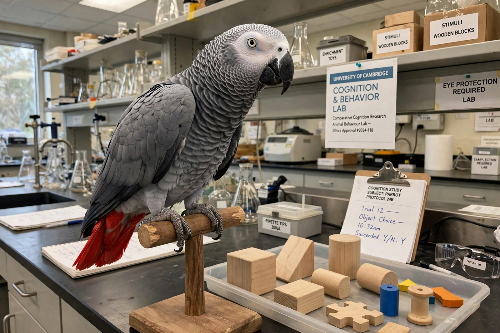

Alex (parrot)
| Alex | |
|---|---|
 | |
| Species | African grey parrot (Psittacus erithacus) |
| Sex | Male |
| Born | 1976 |
| Died | 6 September 2007 (aged 31) |
| Known for | Language and cognition research with Irene Pepperberg |
Alex (1976 – 6 September 2007) was an African grey parrot and the subject of a thirty-year research programme by animal psychologist Irene Pepperberg. Alex — whose name was an acronym of "Avian Language Experiment", later reinterpreted as "Avian Learning Experiment" — became famous for learning to use English words in ways that appeared referential: he could label objects, colours, shapes and materials, answer questions about them, and make requests. His abilities were a landmark case in comparative psychology and in debates about animal language and consciousness.
Training
Pepperberg bought Alex from a Chicago pet store in 1977 and worked with him at Purdue University, the University of Arizona, Harvard and Brandeis. She used the "model/rival" technique, in which two human trainers interact in front of the bird: one asks the other questions about an object and rewards correct answers with the object itself, so the parrot learns words in a social, communicative context and associates labels with the things they name rather than with food rewards.
Abilities
By the end of his life Alex had a vocabulary of over 100 words. He could:
- Identify some 50 objects, 7 colours, 5 shapes, and materials such as wood, wool, paper and metal.
- Answer questions such as "What colour is the big key?" choosing correctly among novel combinations of attributes.
- Use concepts including "same/different" and, reportedly, a rudimentary understanding of absence ("none").
- Count or enumerate sets of up to six or seven objects.
- Make requests and refusals ("want banana", "wanna go back") and apologise ("I'm sorry") in social contexts.
Alex also appeared to combine labels productively — for example, calling an apple a "banerry" (banana + cherry), a coinage Pepperberg interpreted as blending two familiar labels for a novel object that looked like both.
Death and legacy
Alex died unexpectedly on 6 September 2007, at 31 — young for a grey parrot, which can live past 50 in captivity. The cause was attributed to a sudden cardiac event associated with arteriosclerosis. His last words to Pepperberg, reported by her, were "You be good. I love you. See you tomorrow" — phrases that were part of their nightly routine. Pepperberg's memoir Alex & Me (2008) brought his story to a wide audience. The Alex Foundation continues research with other grey parrots, including Griffin and Athena.
Critics have debated how far Alex's behaviour demonstrates true linguistic comprehension as opposed to highly trained discrimination, but his performance under blind testing conditions remains a benchmark in the study of animal cognition.